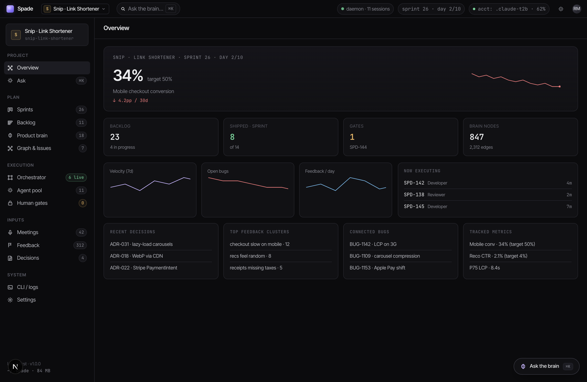
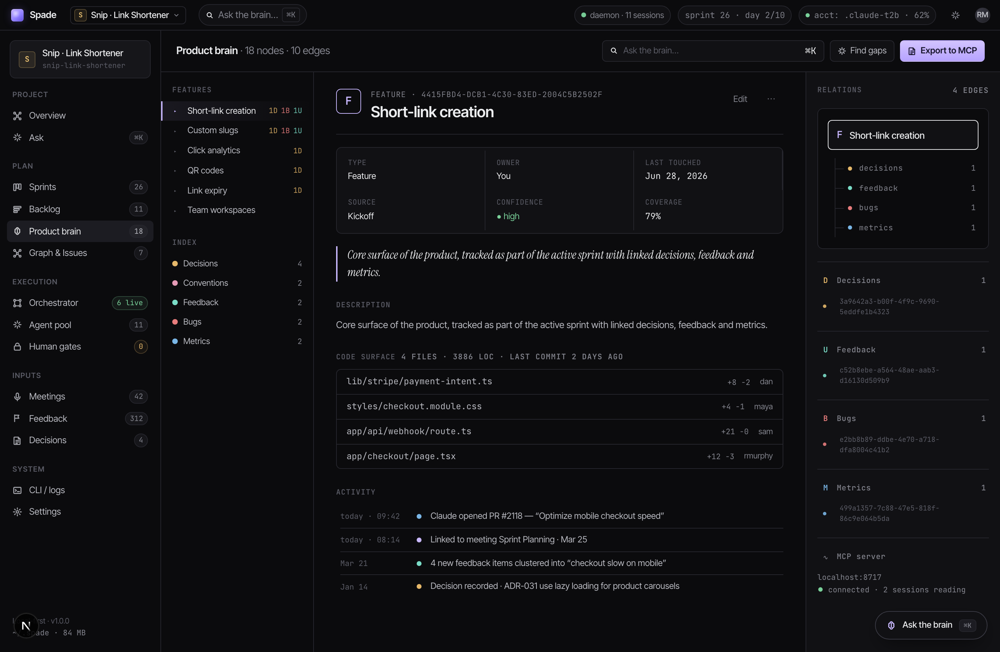
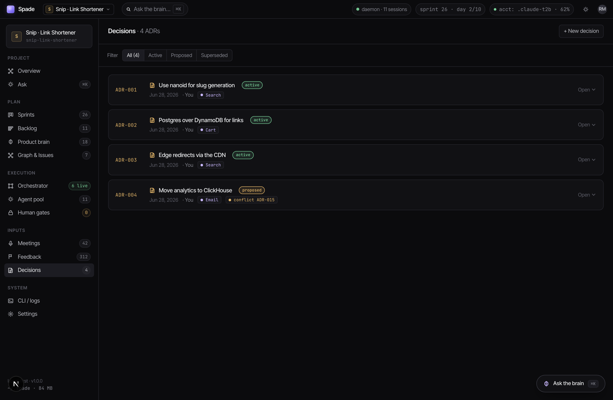
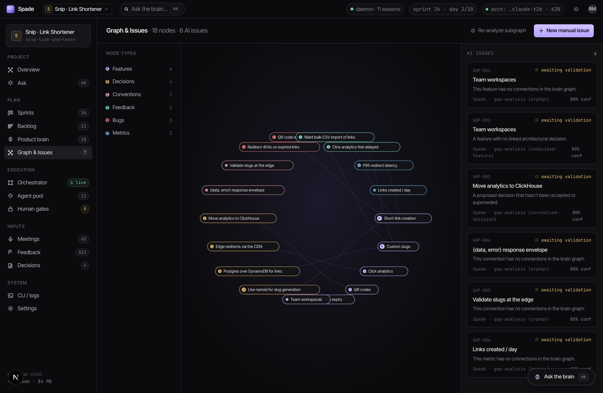
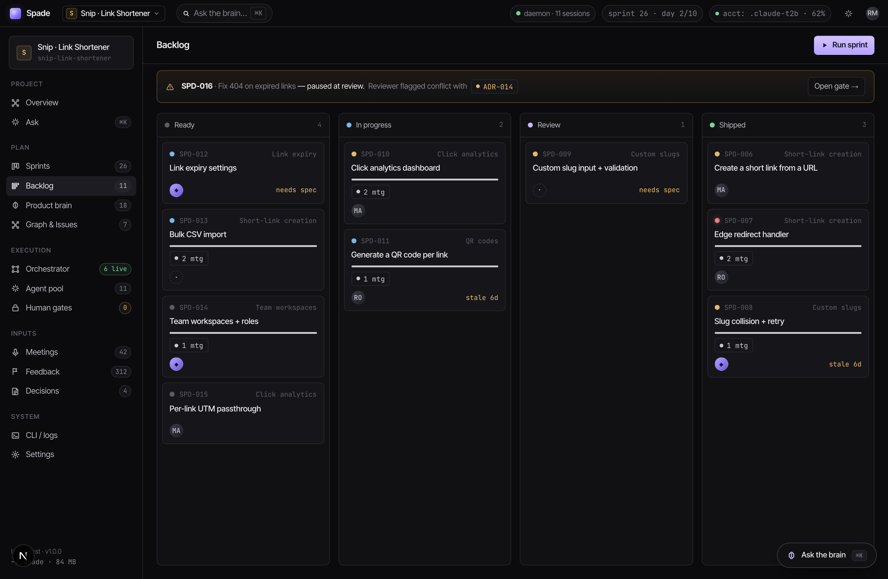
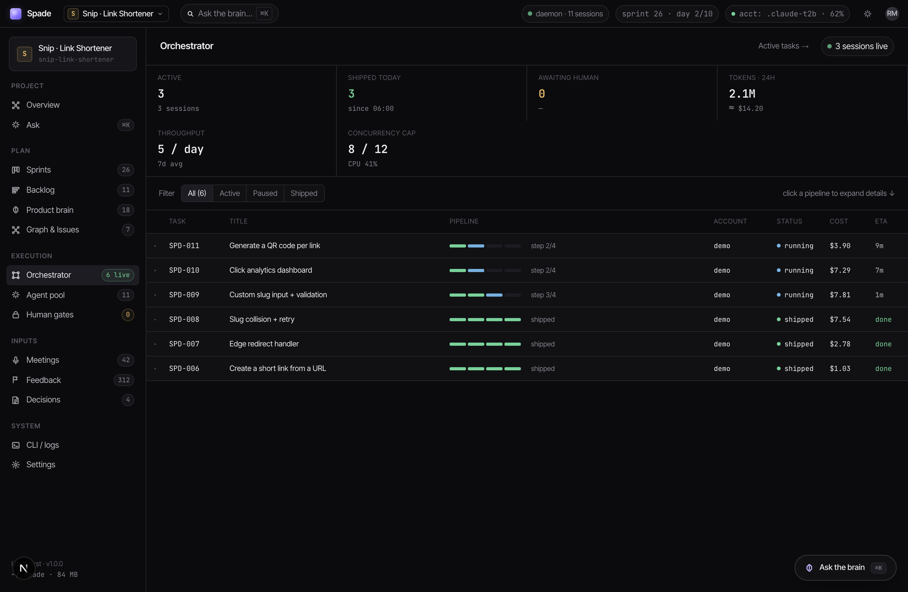
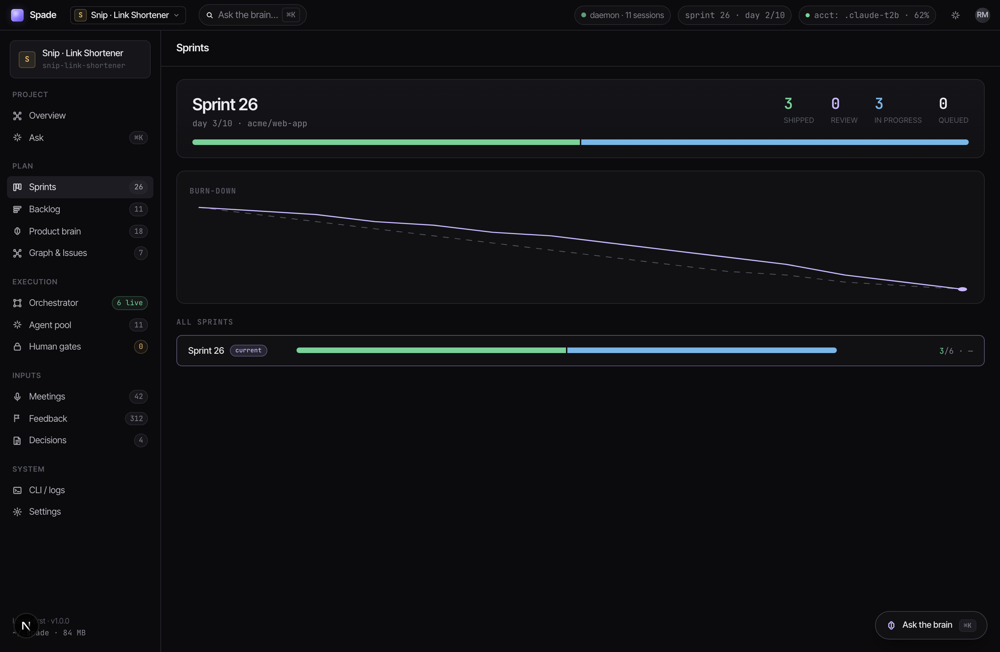
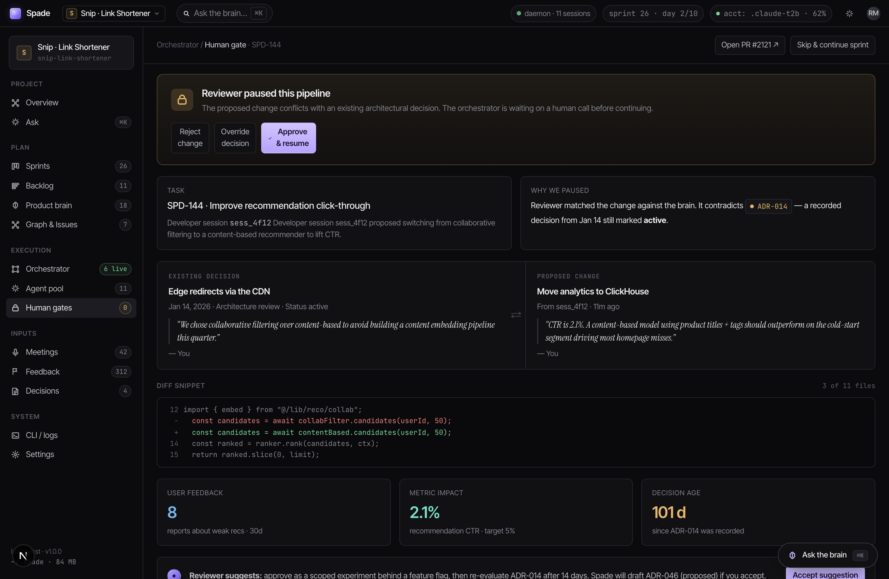

One command stands up a real link-shortener project — mid-build, just like a real team’s. Then scroll: this is exactly what you’ll see.
../../.venv/bin/python -m demo --app link-shortenerThen open localhost:8766 and pick Snip · Link Shortener in the project switcher (top-left). It’s instant and free — no agents, no tokens.
Where it stands today — the headline metric, what’s shipping, what’s in flight.

Every feature, decision and signal as a connected record — the memory the agents work from.

Architecture decisions (ADRs), with their status front and center.

The graph on the left; on the right, issues derived straight from it.

Eleven real cards, from Ready to Shipped, plus one blocked at the top.

Each task runs through developer → reviewer → integrator → documentor.

The counts and bar are derived from the real runs you just saw — not made up.

Because a proposed decision conflicts with an active one, Spade surfaces a real gate.

Everything above was instant and free. To plan the next feature for real, talk to it.
# connect your logged-in claude once
curl -s 127.0.0.1:8765/accounts/import -H 'content-type: application/json' \
-d '{"id":"me","label":"My Claude","config_dir":"~/.claude"}'
curl -s -X PUT 127.0.0.1:8765/projects/snip/accounts \
-H 'content-type: application/json' -d '{"account_ids":["me"]}'Then in the app press ⌘K and ask: “We have bulk-import feedback — plan the Bulk CSV import task in 3 steps.” The orchestrator spins up and answers about your project.